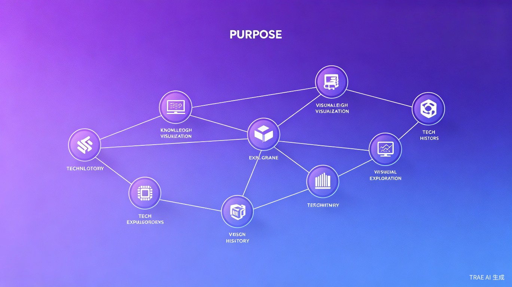

想解决什么问题 · 灵感来源 · 产品形态
科技史学习碎片化、缺乏系统性，学习者难以建立技术演进的完整认知框架。传统百科以词条形式呈现，无法直观展示技术间的依赖与传承关系。
受游戏「科技树」机制启发，结合知识图谱可视化与大语言模型能力，打造一款让科技史「看得见、学得懂、记得住」的智能化学习工具。
Web 应用（Vue3 + Spring Cloud 微服务），支持科技树交互式浏览、AI 智能问答、会员内容解锁、个性化学习路径推荐。
面向哪些用户 · 使用场景 · 当前痛点
三大核心模块，打造沉浸式科技史学习体验

按时代分层布局，节点代表重大技术发明，连线表示技术依赖关系。点击节点查看详情，自动高亮完整前置技术链。
基于 LangChain4j Agent 架构，支持多轮对话。Agent 可调用图谱查询、向量检索、用户进度三类工具，提供个性化学习建议。
完整的商品、订单、支付链路。支持沙箱支付、模拟回调、幂等处理，Seata AT 全局事务保障数据一致性。
Spring Cloud Gateway 集中处理认证授权，剥离伪造请求头，Redis Token 验证，X-User-Id 安全注入下游服务。
效率提升 · 社会价值 · 商业价值
知识图谱将碎片化信息结构化，学习者可在 5 分钟内建立对某一技术领域的整体认知框架，相比传统阅读方式效率提升 3 倍以上。
降低科技史学习门槛，促进科学素养普及。帮助学习者理解「技术不是凭空出现」，培养系统性思维与历史视角。
会员订阅模式可持续变现；图谱数据可扩展至教育 B 端市场；AI 问答能力可输出为 API 服务。
Spring Cloud 微服务 + Vue3 现代化全栈
已完成里程碑与未来规划